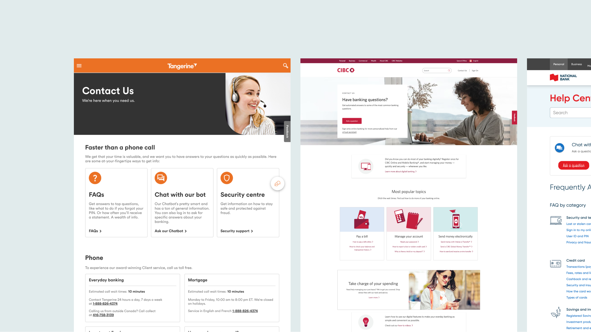
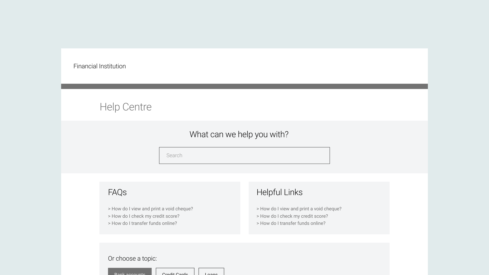

Competitive Analysis
We evaluated the strengths, weaknesses, opportunities, and threats of ten financial institutions.
For each website, we made observations regarding the UI, page layout, content, and flow. As our
team’s primary focus was on the chatbot function and alleviating our customer service centre, we
focused on analyzing the approach to those features.

Pain Points
With the existing system, the client experiences a variety of pain points when accessing the
Customer Service page. To better understand the user, we outlined some of the main ones:
Wireframes
To determine the ideal hierarchy of information, our team created wireframes to explore various
methods of laying out the webpage. We aimed to ensure a balance between providing an informative
experience, without overloading the page with content. We had access to user metrics and most
popular search terms, which informed us about what clients were searching for. I also
rationalized for the ‘Contact Us’ section to be positioned at the bottom of the webpage to
encourage clients to self-serve before getting in touch with customer service.
